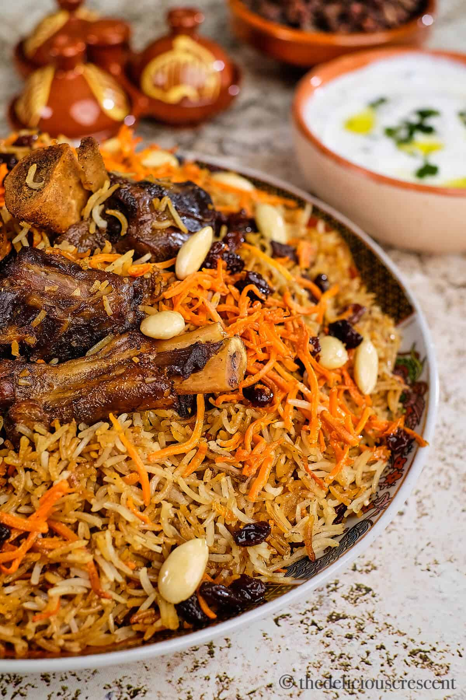
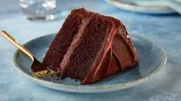

Bolani
Ingredients
- All-purpose flour
- Salt
- Water
- Potato (boiled and mashed)
- Green onions (chopped)
- Fresh cilantro (chopped)
- Oil (for frying)
Cooking Instructions
- Make dough with flour and water; let it rest for 20 minutes.
- Prepare the dough.
- Make the filling.
- Divide the dough into small balls.
- Roll out the dough.
- Add the filling to the center.
- Seal the bolani.
- Cook in a skillet until golden brown.
- Drain excess oil.
- Serve hot.
Rate this recipe:
★
★
★
★
★
Average Rating: N/A
Manto
Ingredients
- All-purpose flour
- Salt
- Water (as needed)
- Ground beef or lamb
- Onion (finely chopped)
- Garlic (minced)
- Cumin powder
- Pepper (to taste)
- Yogurt
- Tomato sauce
- Fresh cilantro (for garnish)
Cooking Instructions
- Prepare the dough with salt and water; not too soft.
- Fry minced meat with onion, garlic, salt, and black pepper until cooked.
- Make the filling.
- Divide the dough and roll into thin circles.
- Add the filling to the center.
- Fold and seal the manto.
- Arrange in a steamer.
- Steam for about 30 minutes.
- Serve with yogurt and tomato sauce.
Rate this recipe:
★
★
★
★
★
Average Rating: N/A
Qabli Palo

Ingredients
- Basmati rice
- Water
- Salt
- Oil
- Lamb or beef
- Onion
- Garlic
- Cumin
- Coriander
- Black pepper
- Carrots
- Raisins
- Almonds
- Saffron (optional)
Cooking Instructions
- Rinse the rice and soak for 30 minutes.
- Brown the meat with onions and garlic.
- Add spices and water; simmer until meat is tender.
- Cook the rice in salted water until partially done.
- Layer the rice over the meat in the pot.
- Add carrots, raisins, and almonds on top.
- Cover and cook on low heat until rice is fully cooked.
- Serve hot.
Rate this recipe:
★
★
★
★
★
Average Rating: N/A
Chocolate Cake

Ingredients
- All-purpose flour
- Cocoa powder
- Sugar
- Baking powder
- Baking soda
- Salt
- Eggs
- Milk
- Vegetable oil
- Vanilla extract
- Boiling water
Cooking Instructions
- Preheat the oven to 350°F (175°C).
- In a bowl, mix the dry ingredients.
- Add eggs, milk, oil, and vanilla; mix well.
- Stir in boiling water until smooth.
- Pour batter into a greased cake pan.
- Bake for 30-35 minutes; check with a toothpick.
- Let cool before frosting.
- Serve and enjoy!
Rate this recipe:
★
★
★
★
★
Average Rating: N/A
Apple Pie

Ingredients
- All-purpose flour
- Butter
- Sugar
- Salt
- Water
- Apples
- Cinnamon
- Nutmeg
- Lemon juice
- Egg (for egg wash)
Cooking Instructions
- Preheat the oven to 425°F (220°C).
- In a bowl, mix flour, salt, and sugar; cut in butter.
- Add water to form a dough; chill for 30 minutes.
- Peel and slice apples; toss with sugar and spices.
- Roll out dough and place in a pie pan.
- Add apple filling and cover with top crust.
- Cut slits for steam; brush with egg wash.
- Bake for 45-50 minutes until golden.
- Let cool before serving.
Rate this recipe:
★
★
★
★
★
Average Rating: N/A
Raisin Cookie
Ingredients
- All-purpose flour
- Butter
- Sugar
- Brown sugar
- Eggs
- Vanilla extract
- Baking soda
- Salt
- Cinnamon
- Raisins
Cooking Instructions
- Preheat the oven to 350°F (175°C).
- Cream together butter, sugar, and brown sugar.
- Add eggs and vanilla; mix well.
- In another bowl, combine flour, baking soda, salt, and cinnamon.
- Gradually add dry ingredients to the wet mixture.
- Fold in raisins.
- Drop spoonfuls onto a baking sheet.
- Bake for 10-12 minutes until golden.
- Let cool before serving.
Rate this recipe:
★
★
★
★
★
Average Rating: N/A
Afghani Doogh
Ingredients
- Yogurt
- Water
- Salt
- Mint leaves
- Cucumber
- Ice cubes (optional)
Making Instructions
- In a bowl, whisk together yogurt and water until smooth.
- Add salt to taste.
- Finely chop mint leaves and cucumber; mix into the yogurt.
- Chill in the refrigerator if desired.
- Serve over ice cubes if preferred.
Rate this recipe:
★
★
★
★
★
Average Rating: N/A
Orange Juice
Ingredients
- Fresh oranges
- Sugar (optional)
- Water (optional)
- Ice (optional)
Making Instructions
- Wash the oranges thoroughly.
- Cut the oranges in half.
- Juice the oranges using a juicer or manual method.
- Taste and add sugar or water if desired.
- Serve chilled over ice if preferred.
Rate this recipe:
★
★
★
★
★
Average Rating: N/A
Cappuccino

Ingredients
- Espresso
- Hot milk
- Foamed milk
- Cocoa powder or cinnamon (optional)
Making Instructions
- Brew a shot of espresso.
- Heat the milk until hot but not boiling.
- Froth the milk until it’s creamy and foamy.
- Pour the hot milk over the espresso.
- Add the foamed milk on top.
- Sprinkle cocoa powder or cinnamon if desired.
- Serve immediately.
Rate this recipe:
★
★
★
★
★
Average Rating: N/A